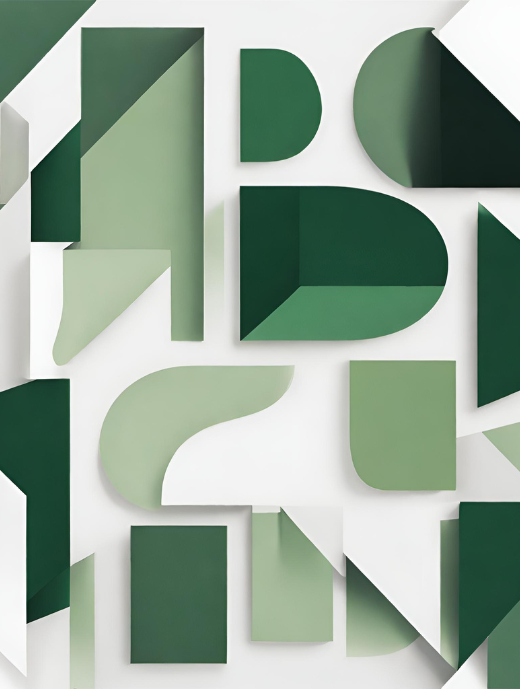
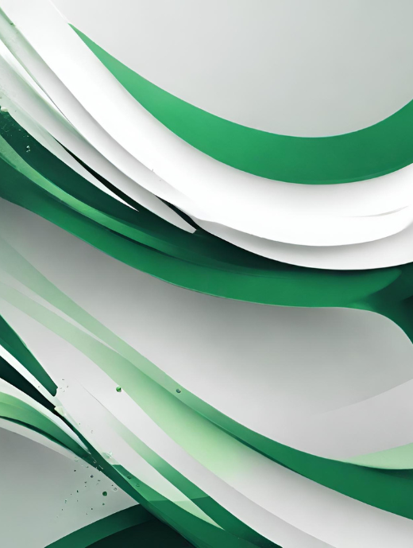

Who am I?
I'm a young 24 years old developer, passionate about
technologies, I wonder how they can be useful to us
without being harmful.
The domain of web development and web design
Le domaine du développement web et du web design allows
me to give free rein to my ideas and make them live by
creating intuitive and aesthetic interfaces.
I'm reviewing and improving several projectts that I have
already created and others that are still being prepared.
Stay tuned!
My goal
My goal is to use my technical skills and passions to contribute
to te creation of an interactive and captivating website. I'm looking for
search for my first job as a web developer/ webmaster in CDI
.
I'm particularly interested in
remote work opportunities
, as tis would allow me to reconcile
my passion for technology with an optimal work-life balance
.

My
values
Tolerance
I accept and respect cultural and individual differences.
Respect
I recognize, respect and value the diversity of opinions and people.
Honesty
Transparent and truthful in all my interactions.
My
qualities
- Autonomy:
I'm able to work independently and take initiatives.
- User experience:
Put user needs at the centre of development.
- Curiosity and continuous learning:
The field of development is changing rapidly, so it is essential to stay up to date with new technologies and to continue learning throughout your career.
- Collaboration and team work :
A developer often works as a team, so it’s important to have good communication skills and be able to collaborate effectively with other team members.